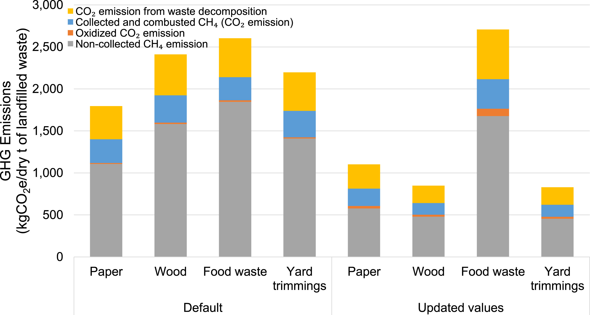

29/11/20 | Word Count: 622
The carbon that wood has sequestered stays trapped within the material, however a
common concern is what happens to the timber once it reaches its end of life. The
natural decomposition of timber leads to the emission of the carbon stored as a gas.
Whilst some of this is in the form of carbon dioxide, it’s also been recognised that
when allowed to degrade, methane can also be
released.
One of the main influencers of this decomposition rate has thought to be the
species of the timber .
The creation of methane is important as it can have more potent impacts on climate change than carbon dioxide.
Methane typically lasts only 12 years in the atmosphere, as it eventually oxidises and becomes carbon dioxide.
However, it’s global warming potential is far greater than carbon dioxide. As seen before, global warming potential
(GWP) is the measure of greenhouse gas emissions and warming effect, normalised to carbon dioxide. Over 20 years,
methane has GWP of 84 kg CO2e, whilst over 100 years, it can have a
GWP of 28 kg CO2e.
This difference is a result of the timescale for which it is measured. As methane only lasts for ~12 years,
the average impact over a short time frame is far more, than the longer 100 years, where the majority of the time,
it is spent as carbon dioxide.
This natural decomposition process could have potentially negative impacts, however in practice it can usually be
avoided. Landfill sites that include organic material typically have systems which capture any biogas produced from
decomposition.
This not only limits the escape of methane to the atmosphere, but harnesses as a usable gas for other applications
such as a fuel source. Although not implemented everywhere, this technique has a lot of promise to limit the overall emissions,
particularly as currently not all methane emissions are captured.
Whilst perception had been that wood was a large contributor to methane emissions from landfills,
recent studies have highlighted that food waste can be a disproportional contributor to
methane emissions.

Updated methane emissions for different organic waste, proposed by Lee et. al, 2017
Furthermore, timber is a material that can be recycled in a number of ways. Clean and untreated timber e.g.
from the production of pallets, can be shredded into animal bedding and
mulch.
Alternatively, wood from construction and demolition waste can be shredded and ground
to be made into panel board products such as chipboard.
Another route for the wood waste is for energy generation through burning the wood. The heat generated from the process
typically warms water up, causing a turbine to turn, and thus generate electricity. If the timber is burnt, assuming the
process has sufficient oxygen (also called complete combustion), it is thought that all carbon in the timber is converted into
carbon dioxide.
This therefore means if timber is burnt, the volume of carbon dioxide captured can be assumed to be released.
The advent of BECCS (bioenergy with carbon capture and storage) could also limit potential negative impacts of GHG emissions from waste timber.
As highlighted in the IPCC Special Report for 1.5oc of warming, BECCS technology
is a viable route to helping reach sustainable development goals. It focuses on the use of energy generation through combustion of
organic matter. Using fitted systems, greenhouse gases which are then emitted from this process would be captured and utilised in
different ways. The Drax Power Station for example,
are investigating the use of microbes that utilise carbon dioxide to create high-value proteins, that could be used to feed fish.
Although there are valid concerns over the decompositon of timber, there are many routes which can be taken to utilise waste wood material, as well as
limit potential GHG emissions from timber at the end of its life as a building material.
{kind=link}